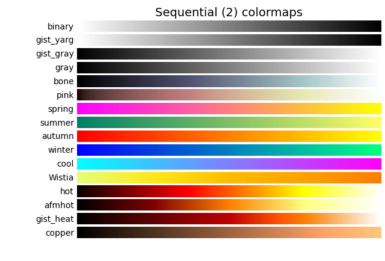
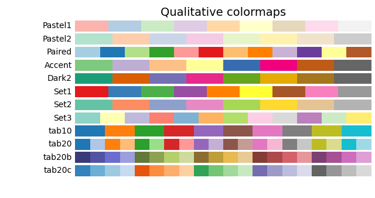
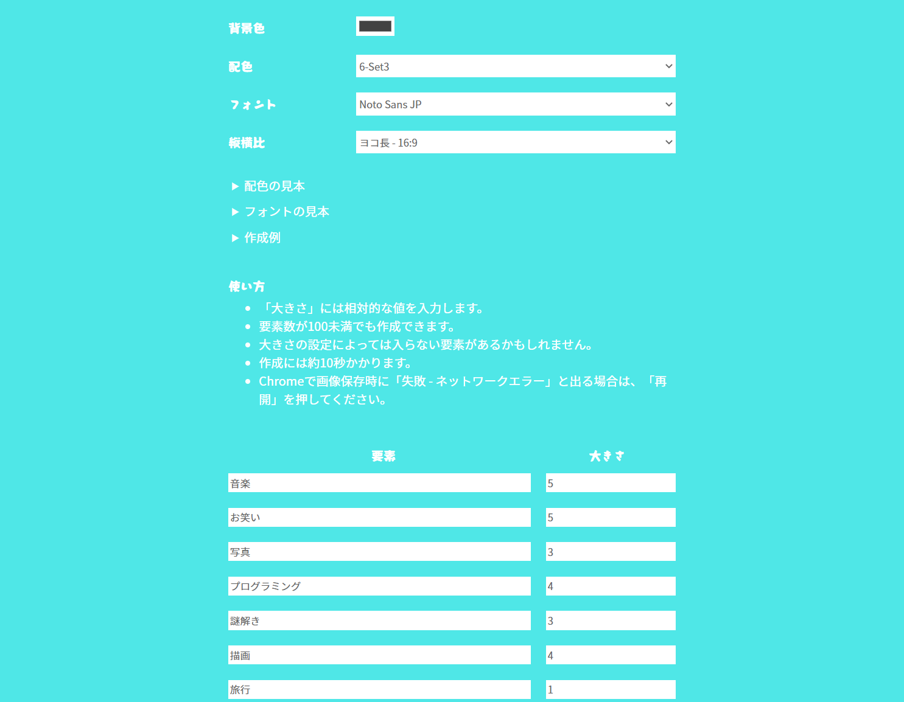

{%- extends "layout.html" %}

{%- block content %}
<form action="/result" method="POST" class="form">
  <p>「私を構成する100の要素」作成ツールです。自分の構成要素を1枚の画像で表すことができます。</p>
  <div class="option">
    <div class="option__item">
      <span>背景色</span><input type="color" name="bgc">
    </div>
    <div class="option__item">
      <span>配色</span>
      <select name="cmap">
        <option value="viridis">1-viridis</option>
        <option value="plasma">1-plasma</option>
        <option value="inferno">1-inferno</option>
        <option value="magma">1-magma</option>
        <option value="cividis">1-cividis</option>
        <option value="Greys">2-Greys</option>
        <option value="Purples">2-Purples</option>
        <option value="Blues">2-Blues</option>
        <option value="Greens">2-Greens</option>
        <option value="Oranges">2-Oranges</option>
        <option value="Reds">2-Reds</option>
        <option value="YlOrBr">2-YlOrBr</option>
        <option value="YlOrRd">2-YlOrRd</option>
        <option value="OrRd">2-OrRd</option>
        <option value="PuRd">2-PuRd</option>
        <option value="RdPu">2-RdPu</option>
        <option value="BuPu">2-BuPu</option>
        <option value="GnBu">2-GnBu</option>
        <option value="PuBu">2-PuBu</option>
        <option value="YlGnBu">2-YlGnBu</option>
        <option value="PuBuGn">2-PuBuGn</option>
        <option value="BuGn">2-BuGn</option>
        <option value="YlGn">2-YlGn</option>
        <option value="binary">3-binary</option>
        <option value="gist_yarg">3-gist_yarg</option>
        <option value="gist_gray">3-gist_gray</option>
        <option value="gray">3-gray</option>
        <option value="bone">3-bone</option>
        <option value="pink">3-pink</option>
        <option value="spring">3-spring</option>
        <option value="summer">3-summer</option>
        <option value="autumn">3-autumn</option>
        <option value="winter">3-winter</option>
        <option value="cool">3-cool</option>
        <option value="Wistia">3-Wistia</option>
        <option value="hot">3-hot</option>
        <option value="afmhot">3-afmhot</option>
        <option value="gist_heat">3-gist_heat</option>
        <option value="copper">3-copper</option>
        <option value="PiYG">4-PiYG</option>
        <option value="PRGn">4-PRGn</option>
        <option value="BrBG">4-BrBG</option>
        <option value="PuOr">4-PuOr</option>
        <option value="RdGy">4-RdGy</option>
        <option value="RdBu">4-RdBu</option>
        <option value="RdYlBu">4-RdYlBu</option>
        <option value="RdYlGn">4-RdYlGn</option>
        <option value="Spectral">4-Spectral</option>
        <option value="coolwarm">4-coolwarm</option>
        <option value="bwr">4-bwr</option>
        <option value="seismic">4-seismic</option>
        <option value="twilight">5-twilight</option>
        <option value="twilight_shifted">5-twilight_shifted</option>
        <option value="hsv">5-hsv</option>
        <option value="Pastel1">6-Pastel1</option>
        <option value="Pastel2">6-Pastel2</option>
        <option value="Paired">6-Paired</option>
        <option value="Accent">6-Accent</option>
        <option value="Dark2">6-Dark2</option>
        <option value="Set1">6-Set1</option>
        <option value="Set2">6-Set2</option>
        <option value="Set3" selected>6-Set3</option>
        <option value="tab10">6-tab10</option>
        <option value="tab20">6-tab20</option>
        <option value="tab20b">6-tab20b</option>
        <option value="tab20c">6-tab20c</option>
        <option value="flag">7-flag</option>
        <option value="prism">7-prism</option>
        <option value="ocean">7-ocean</option>
        <option value="gist_earth">7-gist_earth</option>
        <option value="terrain">7-terrain</option>
        <option value="gist_stern">7-gist_stern</option>
        <option value="gnuplot">7-gnuplot</option>
        <option value="gnuplot2">7-gnuplot2</option>
        <option value="CMRmap">7-CMRmap</option>
        <option value="cubehelix">7-cubehelix</option>
        <option value="brg">7-brg</option>
        <option value="gist_rainbow">7-gist_rainbow</option>
        <option value="rainbow">7-rainbow</option>
        <option value="jet">7-jet</option>
        <option value="turbo">7-turbo</option>
        <option value="nipy_spectral">7-nipy_spectral</option>
        <option value="gist_ncar">7-gist_ncar</option>
      </select>
    </div>
    <div class="option__item">
      <span>フォント</span>
      <select name="font">
        <option value="COFFMilk.otf">CoffeeMilkCrazy</option>
        <option value="KiwiMaru-Light.ttf">キウイ丸 (Light)</option>
        <option value="KiwiMaru-Regular.ttf">キウイ丸</option>
        <option value="COFFMKiwiMaru-Medium.ttf">キウイ丸 (Medium)</option>
        <option value="NotoSansJP-Thin.otf">Noto Sans JP (Thin)</option>
        <option value="NotoSansJP-Light.otf">Noto Sans JP (Light)</option>
        <option value="NotoSansJP-Regular.otf" selected>Noto Sans JP</option>
        <option value="NotoSansJP-Medium.otf">Noto Sans JP (Medium)</option>
        <option value="NotoSansJP-Bold.otf">Noto Sans JP (Bold)</option>
        <option value="NotoSansJP-Black.otf">Noto Sans JP (Black)</option>
        <option value="NotoSerifJP-ExtraLight.otf">Noto Serif JP (ExtraLight)</option>
        <option value="NotoSerifJP-Light.otf">Noto Serif JP (Light)</option>
        <option value="NotoSerifJP-Regular.otf">Noto Serif JP</option>
        <option value="NotoSerifJP-Medium.otf">Noto Serif JP (Medium)</option>
        <option value="NotoSerifJP-SemiBold.otf">Noto Serif JP (SemiBold)</option>
        <option value="NotoSerifJP-Bold.otf">Noto Serif JP (Bold)</option>
        <option value="NotoSerifJP-Black.otf">Noto Serif JP (Black)</option>
        <option value="RictyDiminishedDiscord-Regular.ttf">Ricty Diminished Discord</option>
        <option value="RictyDiminishedDiscord-Bold.ttf">Ricty Diminished Discord (Bold)</option>
        <option value="Roboto-Thin.ttf">Roboto (Thin)</option>
        <option value="Roboto-Light.ttf">Roboto (Light)</option>
        <option value="Roboto-Regular.ttf">Roboto</option>
        <option value="Roboto-Medium.ttf">Roboto (Medium)</option>
        <option value="Roboto-Bold.ttf">Roboto (Bold)</option>
        <option value="Roboto-Black.ttf">Roboto (Black)</option>
        <option value="ShipporiMincho-Regular.ttf">しっぽり明朝</option>
        <option value="ShipporiMincho-Medium.ttf">しっぽり明朝 (Medium)</option>
        <option value="ShipporiMincho-SemiBold.ttf">しっぽり明朝 (SemiBold)</option>
        <option value="ShipporiMincho-Bold.ttf">しっぽり明朝 (Bold)</option>
        <option value="ShipporiMincho-ExtraBold.ttf">しっぽり明朝 (ExtraBold)</option>
        <option value="Hannari.otf">はんなり明朝</option>
        <option value="Pigmo-00.otf">ピグモ00</option>
        <option value="Pigmo-01.otf">ピグモ01</option>
        <option value="数式フォントver1.4.ttf">数式フォント</option>
      </select>
    </div>
    <div class="option__item">
      <span>縦横比</span>
      <select name="aspect_ratio">
        <option value="130:130">正方形 - 1:1</option>
        <option value="170:85">ヨコ長 - 2:1</option>
        <option value="180:60">ヨコ長 - 3:1</option>
        <option value="150:100">ヨコ長 - 3:2</option>
        <option value="140:105">ヨコ長 - 4:3</option>
        <option value="160:90" selected>ヨコ長 - 16:9</option>
        <option value="162:100">ヨコ長 - 1.618:1（黄金比）</option>
        <option value="140:100">ヨコ長 - 1.414:1（白銀比）</option>
        <option value="173:100">ヨコ長 - 1.732:1（白金比）</option>
        <option value="198:60">ヨコ長 - 3.303:1（青銅比）</option>
        <option value="85:170">タテ長 - 1:2</option>
        <option value="60:180">タテ長 - 1:3</option>
        <option value="100:150">タテ長 - 2:3</option>
        <option value="105:140">タテ長 - 3:4</option>
        <option value="90:160">タテ長 - 9:16</option>
        <option value="100:162">タテ長 - 1:1.618（黄金比）</option>
        <option value="100:140">タテ長 - 1:1.414（白銀比）</option>
        <option value="100:173">タテ長 - 1:1.732（白金比）</option>
        <option value="60:198">タテ長 - 1:3.303（青銅比）</option>
      </select>
    </div>
  </div>

  <div class="form__desc">
    <details class="form__desc__details">
      <summary>配色の見本</summary>
      <figure class="form__desc__details__figure">
        
        
        
        
        
        
        
        <figcaption><small>出典：<cite><a href="https://matplotlib.org/stable/tutorials/colors/colormaps.html">Choosing Colormaps in Matplotlib</a></cite></small></figcaption>
      </figure>
    </details>
    <details class="form__desc__details">
      <summary>フォントの見本</summary>
      
    </details>
    <details class="form__desc__details">
      <summary>作成例</summary>
      <p>こちらは要素数67で作りました。</p>
      
      <details class="form__desc__details">
        <summary>作成例の設定画面</summary>
        
      </details>
      <details class="form__desc__details">
        <summary>その他の作成例一覧</summary>
        <figure class="form__desc__details__figure">
          
          <figcaption><small>#4D4D4D / 6-Set3 / しっぽり明朝 / ヨコ長-16:9</small></figcaption>
        </figure>
        <figure class="form__desc__details__figure">
          
          <figcaption><small>#466D4A / 2-Reds / ピグモ00 / ヨコ長-16:9</small></figcaption>
        </figure>
        <figure class="form__desc__details__figure">
          
          <figcaption><small>#000000 / 7-rainbow / キウイ丸 (Light) / ヨコ長-16:9</small></figcaption>
        </figure>
      </details>
    </details>
  </div>

  <div class="form__use">
    <h2 class="ttl--2">使い方</h2>
    <ul class="form__use__list">
      <li>「大きさ」には相対的な値を入力します。</li>
      <li>要素数が100未満でも作成できます。</li>
      <li>大きさの設定によっては入らない要素があるかもしれません。</li>
      <li>作成には約10秒かかります。</li>
      <li>Chromeで画像保存時に「失敗 - ネットワークエラー」と出る場合は、「再開」を押してください。</li>
    </ul>
  </div>

  <table class="form__table">
      {{ tr | safe }}
  </table>
  <button type="submit" class="submit_btn">作成</button>

</form>

<script type="text/javascript">
  $("#states3").select2();
</script>
{%- endblock %}
